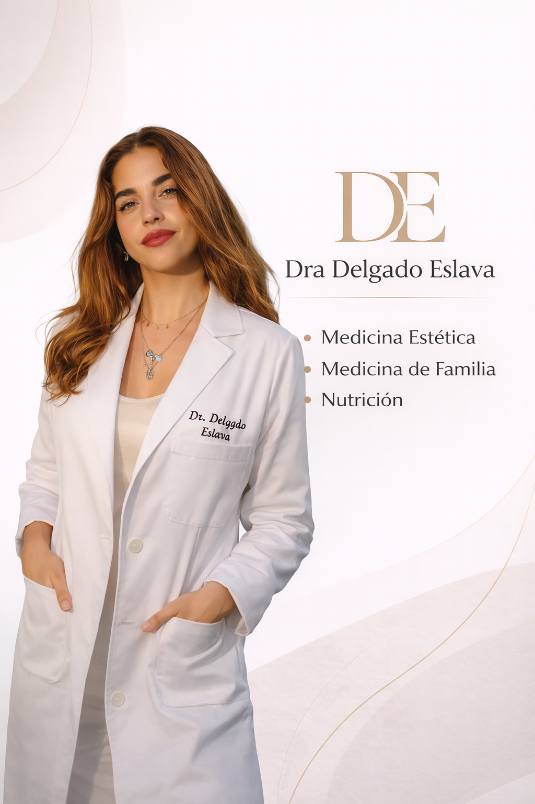
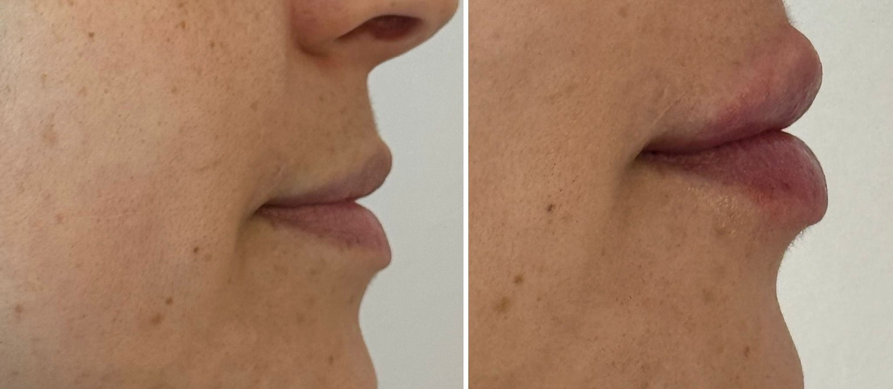
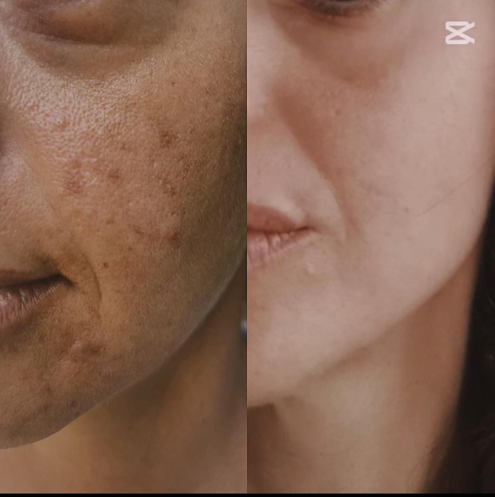
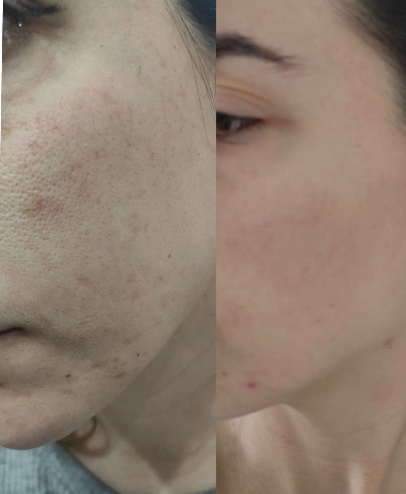
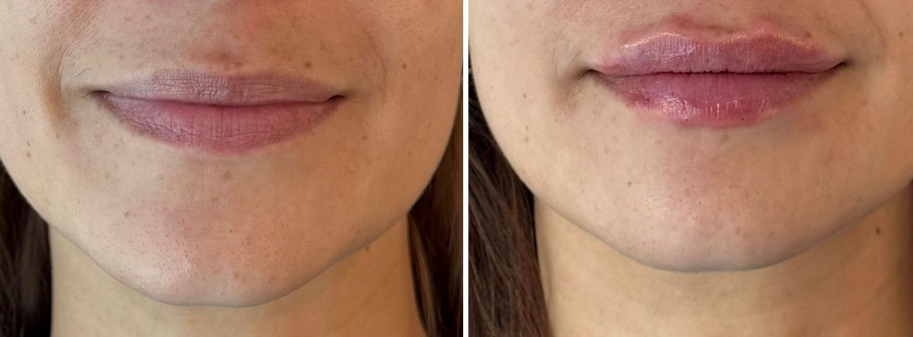
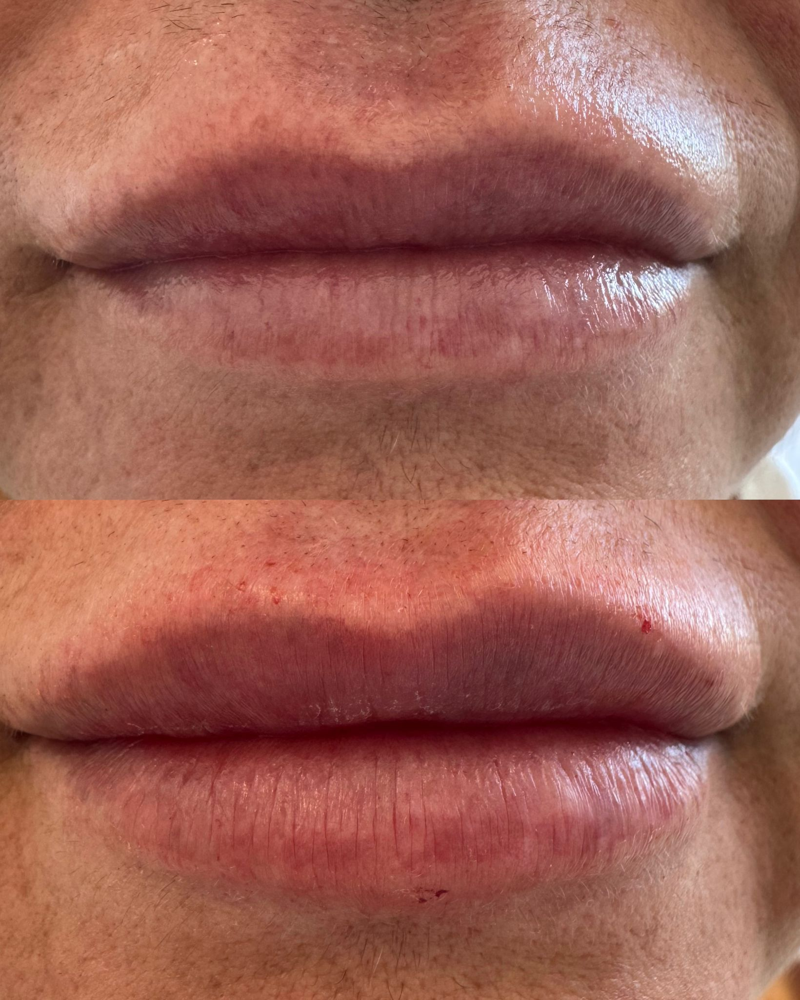
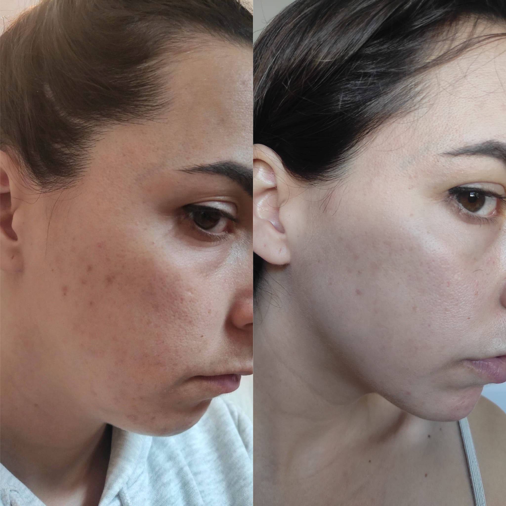
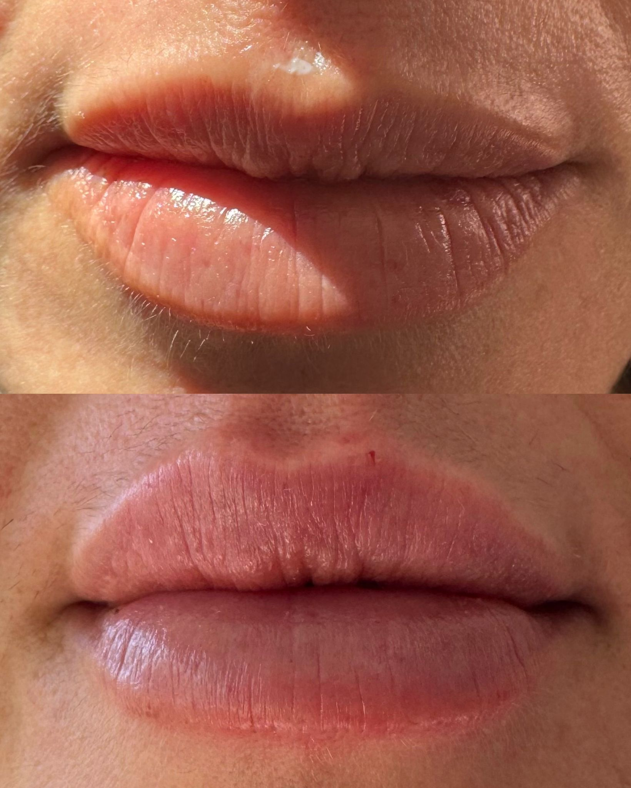

Medicina Estética
Procedimientos orientados a mejorar la armonía facial y la calidad de la piel con naturalidad, equilibrio y una valoración médica individualizada.
Consulta privada en Málaga
Medicina estética · Nutrición · Medicina familiar
Atención médica personalizada, valoración rigurosa y un enfoque cercano para ayudarte a cuidarte con naturalidad, equilibrio y confianza en cada etapa.

Sobre mí
Soy la Dra. Delgado Eslava y desarrollo mi actividad en Málaga desde una consulta privada en la que cada paciente recibe una atención personalizada, serena y basada en una valoración médica completa.
Mi forma de trabajar une medicina estética, nutrición y medicina familiar para ofrecer un acompañamiento riguroso y cercano. Busco que te sientas escuchado desde el primer momento y que cada decisión responda a tus necesidades reales, con naturalidad en los resultados y profesionalidad en todo el proceso.
Mi enfoque
Entiendo la medicina desde la escucha, la prevención y la personalización. Tanto en medicina estética como en nutrición y medicina familiar, mi objetivo es ofrecerte una atención clara, honesta y adaptada a ti, con un trato cercano y una mirada médica que inspire confianza.
Servicios
Trabajo cada servicio desde la valoración médica y la adaptación a cada persona, con una atención cercana, profesional y enfocada en objetivos realistas.
Procedimientos orientados a mejorar la armonía facial y la calidad de la piel con naturalidad, equilibrio y una valoración médica individualizada.
Asesoramiento nutricional personalizado para ayudarte a mejorar hábitos, composición corporal y bienestar general de forma realista y sostenible.
Atención médica integral para prevención, orientación y seguimiento de problemas frecuentes desde una relación continuada y cercana.
Resultados
Una selección visual de resultados que refleja un trabajo basado en la naturalidad, la proporción y el respeto por la identidad de cada paciente.







Contacto
Si deseas resolver una duda o pedir cita para tu consulta privada en Málaga, puedes escribirme directamente por WhatsApp. Te responderé con atención cercana, clara y personalizada.
Escribir por WhatsApp